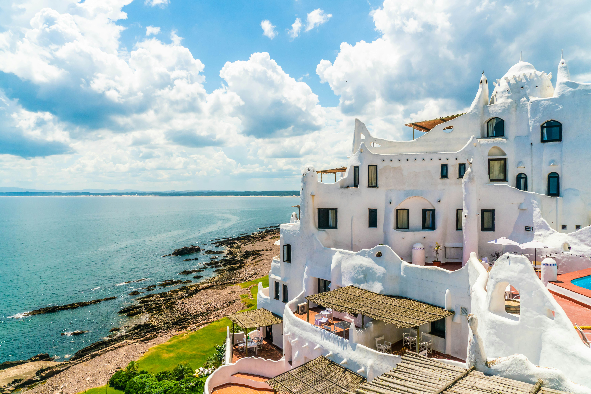

Tucked between Argentina and Brazil, Uruguay is a small but mighty country full of charm, history, and natural beauty. With a population of just over 3 million people, it’s one of South America’s most peaceful and progressive nations. FUN FACT: Uruguay has more cows than people! From the vibrant energy of Montevideo to the sun-kissed beaches of Punta del Este, Uruguay offers something for every kind of traveler. Whether you're a foodie, a beach lover, a history buff, or simply curious about life in this laid-back country, this site will guide you through the best attractions, hidden gems, and must-know tips. Let’s Explore!
